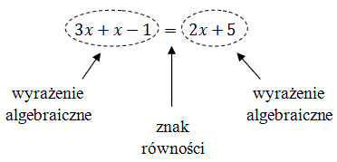

Umiejętność rozwiązywania równań jest w matematyce bardzo ważna. Za ich pomocą
można rozwiązywać wiele skomplikowanych zadań. Żeby nauczyć się rozwiązywać równania, warto
wcześniej dobrze zrozumieć
wyrażenia algebraiczne.
Najprostszymi równaniami są właśnie równania liniowe.
Równanie - to dwa wyrażenia algebraiczne połączone znakiem równości, np.:

Każde równanie ma lewą i prawą stronę.
Rozwiązanie równania polega na znalezieniu takiej liczby \(x\), która po
podstawieniu do równania, da po prawej i po lewej stronie taki sam wynik.
Żeby rozwiązać
równanie, to należy przekształcanie je w taki sposób, żeby po jednej jego stronie stała tylko sama
niewiadoma \(x\), a po drugiej stronie tylko liczba. Doprowadzić do takiej sytuacji można poprzez:
- Dodawanie lub odejmowanie od obu stron równania takiej samej liczby (lub wyrażenia z \(x\)-em).
- Dzielenie lub mnożenie obu stron równania przez tą samą liczbę.
Rozwiąż równanie \(3x+x-1=2x+5\).
Na początku uprościmy lewą stronę równania dodając wyrażenia z \(x\)-em:
\[\begin{split} 3x+x-1&=2x+5\\[6pt] 4x-1&=2x+5 \end{split}\] Teraz od obu stron równania
odejmiemy wyrażenie \(2x\), żeby po prawej stronie pozbyć się wyrażeń z \(x\)-em.
\[\begin{split} 4x-1\color{Red}{-2x} &=2x+5\color{Red}{-2x} \\[6pt] 2x-1&=5 \end{split}\] Teraz
do obu stron równania dodamy liczbę \(1\), żeby po lewej stronie zostało samo wyrażenie z
\(x\)-em. \[\begin{split} 2x-1\color{Red}{+1} &=5\color{Red}{+1} \\[6pt] 2x&=6 \end{split}\]
Teraz dzielimy obie strony równania przez liczbę \(2\), żeby po lewej stronie został sam \(x\).
\[\begin{split} \qquad 2x&=6\qquad //:2\\[6pt] x&=3 \end{split}\] Odpowiedź: Rozwiązaniem
równania jest liczba \(x = 3\).